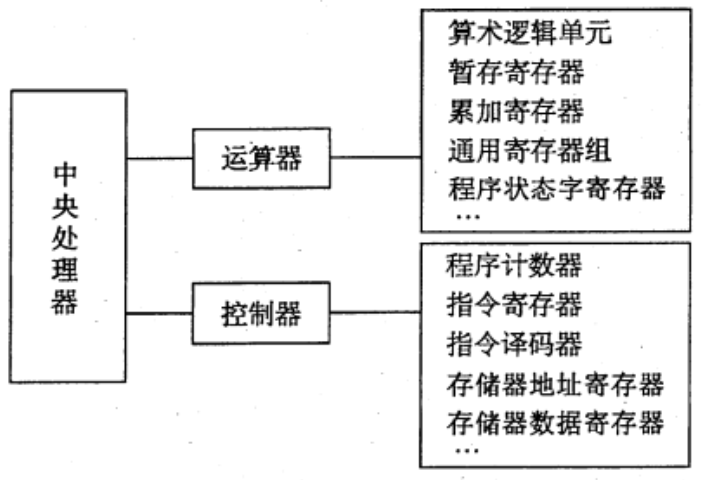

2022.08.26
中央处理器（CPU）由运算器和控制器组成。其中，控制器的功能是负责协调并控制计算机各部件执行程序的指令序列，包括取指令、分析指令和执行指令；运算器的功能是对数据进行加工。CPU 的具体功能包括：

在计算机系统中，中央处理器主要由运算器和控制器两大部分组成，如图所示。
运算器接收从控制器送来的命令并执行相应的动作，对数据进行加工和处理。运算器是计算机对数据进行加工处理的中心，它主要由算术逻辑单元 （ALU)、暂存寄存器、累加寄存器(ACC)、通用寄存器组、程序状态字寄存器(PSW）、移位器、计数器（CT）等组成。
控制器是整个系统的指挥中枢，在控制器的控制下，运算器、存储器和输入/输出设备等功能部件构成一个有机的整体，根据指令的要求指挥全机协调工作。控制器的基本功能是执行指控制器是幣个系统的指挥中枢，在控制器的控制下，运算器、存储器和输入/输出设备等功能部件构成一个有机的整体，根据指令的要求指挥全机协调工作。控制器的基本功能是执行指令，每条指令的执行是由控制器发出的一组微操作实现的。
控制器有硬布线控制器和微程序控制器两种类型（见5.4节）。
控制器由程序计数器（PC)、指令寄存器（IR)、指令译码器、存储器地址寄存器(MAR）、存储器数据寄存器(MDR）、时序系统和微操作信号发生器等组成。
控制器的工作原理是，根据指令操作码、指令的执行步骤 （微命令序列）和条件信号来形成当前计算机各部件要用到的控制信号。计算机憋机各硬件系统在这些控制信号的控制下协同运行，产生预期的执行结果。
注意：CPU 内部寄存器大致可分为两类：一类是用户可见的寄存器，可对这类寄存器编程，如通用寄存器组、程序状态宇寄存器;另一类是用户不可见的寄存器，对用户是透明的，不可对这类寄存器编程，如存储器地址寄存器、存储器数据寄存器、指令寄存器。
下列部件不属于控制器的是（） A.指令寄存器 B.程序计数器 C.程序状态字寄存器 D.时序电路
【答案】：C
通用寄存器是（）. A. 可存放指令的寄存器 B. 可存放程序状态宇的寄存器 C. 本身具有计数逻辑与移位逻辑的寄存器 D. 可编程指定多种功能的寄存器
【答案】：D
CPU 中保存当前正在执行指令的寄存器是（ ） A.指令寄存器 B.指令译码器 C.数据寄存器 D.地址寄存器
【答案】：A
在CPU中，跟踪后继指令地址的寄存器是（ ）. A.指今寄存器 B.程序计数器 C.地址寄存器 D.状态寄存器
【答案】：B
条件转移指令执行时所依据的条件来自（）。 A.指令寄存器 B.标志寄存器 C.程序计数器 D.地址寄存器
【答案】：C->B。条件转移指令执行时，需对标志寄存器的内容进行测试，判断是否满足转移条件。
在所谓的n位CPU中，n是指（)。 A.地址总线线数 B.数据总线线数 C.控制总线线数 D. IO 线数
【答案】：C->B
在CPU的寄存器中，（ ）对用户是透明的。 A.程序计数器 B.状态寄存器 C.指令寄存器 D.通用寄存器
【答案】：C
程序计数器（PC）属于（） A.运算器 B.控制器 C.存储器 D. ALU
【答案】：B
下面有关程序计数器（PC）的叙述中，错误的是（）。 A. PC中总是存放指令地址 B. PC 的值由CPU 在执行指令过程中进行修改 C.转移指令时，PC 的值总是修改为转移指令的目标地址 D.PC的位数一般和存储器地址寄存器（MAR）的位数一样
【答案】：C
在一条无条件跳转指令的指令周期内，PC的值被修改（）次 A.1 B.2 C 3 D.无法确定
【答案】：B
程序计数器的位数取決于（ ）. A.存储器的容量 B.机器字长 C.指令字长 D.都不对
【答案】：A
指令寄存器的位数取决于（）。 A. 存储器的容量 B. 机器字长 C.指令宇长 D.存储宇长
【答案】：C
CPU 中通用寄存器的位数取决于（）。 A. 存储器的容量 B.指令的长度 C.机器宇长 D.都不对
【答案】：C
CPU中的通用寄存器，（ ）。 A. 只能存放数据，不能存放地址 B. 可以存放数据和地址 C.既不能存放数据，又不能存放地址 D.可以存放数据和地址，还可以替代指令寄存器
【答案】：D->B
在计算机系统中表征程序和机器运行状态的部件是（）。 A.程序计数器 B. 果加寄存器 C. 中断寄存器 D.程序状态宇寄存器
【答案】：D
状态寄存器用来存放(）。 A. 算术运算结果 C.运箅类型 B.逻輯运算结果 D.算术、逻辑运算及浏试指令的结果状态
【答案】：D
控制器的全部功能是（） A. 产生时序信号 B. 从主存中取出指令并完成指令操作码译码 C.从主存中取出指令、分析指令并产生有关的操作控制信号 D.都不对
【答案】：C
指令译码是指对（）进行译码。 A.整条指令 B.指令的操作码字段 C.指令的地址码字段 D.指令的地址
【答案】：A？->B
CPU 中不包括（）。 A.存储器地址寄存器 B.指令寄存器 C.地址译码器 D.程序计数器
【答案】：C。地址译码器位于存储器！
以下关于计算机系统的概念中，正确的是（）。 I. CPU 不包括地址译码器 II. CPU 的程序计数器中存放的是操作数地址 III. CPU中决定指令执行顺序的是程序计数器 IV. CPU的状态寄存器对用户是完全透明的 A.I、III B. III、 IV C. II、III、IV D. I, III, IV
【答案】：A
间址周期结束时，CPU 内寄存器MDR 中的内容为（）. A.指令 B.操作数地址 C.操作数 D.无法确定
【答案】：B
【2010统考真题】下列寄存器中，汇编语言程序员可见的是(）. A.存储器地址寄存器（MAR） B.程序计数器(PC) C.存储器数据寄存器(MDR） D.指令寄存器（IR） 【答案】：B